[CCNA图文笔记]-22-STP生成树协议实例详解
引言
这篇文章介绍STP（Spanning-Tree Protocol，生成树协议）的工作原理，在分层网络中存在冗余链路的情况下容易引起流量环路，使用STP能够动态的管理这些冗余链路；当某台交换机的一条连接丢失时，另一条链路能迅速取代失败链路，并且不会产生流量环路。文章主要包括下面几点内容：冗余拓扑中存在的问题、生成树协议、生成树收敛、利用生成树实现负载均衡等。
文章目录
- 0×1.冗余链路中存在的问题
- a.广播风暴
- b.MAC地址表不稳定
- c.重复帧拷贝
- 0×2.STP介绍
- a.STP算法
- b.根交换机选举
- c.端口花费和路径花费
- d.BPDU结构浅析
- e.STP端口角色
- f.端口状态和BPDU时间
- 0×3.STP收敛
- a.生成树的选举
- b.STP拓扑变化
- 0×4.STP负载均衡实验
0×1.冗余链路中存在的问题
这一部分使用下面这个拓扑图（图1）来讲解一下链路冗余容易造成的三个问题：

如图1所示SW1和SW2之间有两条线路相连，它们之间任何一条链路出现故障另外一条线路可以马上顶替出现故障的那条链路，这样可以很好的解决单链路故障引起的网络中断，但在此之前有下面三个需要考虑的问题。
a.广播风暴
以太网交换机传送的第二层数据帧不像路由器传送的第三层数据包有TTL（Time To Live），如果有环路存在第二层帧不能被适当的终止，他们将在交换机之间永无止境的传递下去。结合交换机的工作原理，来看一下图1中广播风暴是如何形成的：
1）PC1发出一个广播帧（可能是一个ARP查询），SW1收到这个广播帧，SW1将这个广播帧从除接收端口的其他端口转发出去（即发往fa0/2、fa0/23、fa0/24）。
2）SW2从自己的fa0/23和fa0/24都会收到SW1发过来的相同的广播帧，SW2再将这个广播帧从除接收端口外的所有其他接口发送出去（SW2将从fa0/23接收的广播帧发往其他三个端口fa0/24、fa0/1、fa0/2，从fa0/24接收到的也会发往其他三个端口fa0/23、fa0/1、fa0/2）。
3）这样这个广播帧又从fa0/23以及fa0/24传回了SW1，SW1再用相同的方法传回SW2，除非物理线路被破坏，否则PC1-4将不停的接收到广播帧，最终造成网络的拥塞甚至瘫痪。
b.MAC地址表不稳定
广播风暴除了会产生大量的流量外，还会造成MAC地址表的不稳定，在广播风暴形成过程中：
1）PC1发出的广播帧到达SW1，SW1将根据源MAC进行学习，SW1将PC1的MAC和对应端口fa0/1写入MAC缓存表中。
2）SW1将这个广播帧从除接收端口之外的其他端口转发出去，SW2接收到两个来自SW1的广播（从fa0/23和fa0/24），假设fa0/23首先收到这个广播帧，SW2根据源MAC进行学习，将PC1的MAC和接收端口fa0/23存入自己的MAC缓存表，但是这时候又从fa0/24收到了这个广播帧，SW1将PC1的MAC和对应的fa0/24接口存入自己的MAC缓存表。
3）SW2分别从自己的这两个接口再将这个广播帧发回给SW1，这样PC1的MAC地址会不停的在两台交换机的fa0/23和fa0/24之间变动，MAC地址缓存表也不断的被刷新，影响交换机的性能。
c.重复帧拷贝
冗余拓扑除了会带来广播风暴以及MAC地址的不稳定，还会造成重复的帧拷贝：
1）假设PC1发送一个单播帧给PC3，这个单播帧到达SW1，假设SW1上还没有PC3的MAC地址，根据交换机的原理，对未知单播帧进行泛洪转发，即发往除接收端口外的所有其他端口(fa0/2、fa0/23、fa0/24)。
2）SW2分从自己的fa0/23和fa0/24接收到这个单播帧，SW3知道PC3连接在自己的fa0/1接口上，所以SW1将这两个单播帧都转发给PC3。
3）PC1只发送了一个单播帧，PC3却收到了两个单播帧，这会给某些网络环境比如流量统计带来不精确计算等问题。
0×2.STP介绍
基于冗余链路中存在的这些问题，STP被设计出来用来解决这些问题，下面介绍STP的工作原理。
a.STP算法
STP通过拥塞冗余路径上的一些端口，确保到达任何目标地址只有一条逻辑路径，STP借用交换BPDU（Bridge Protocol Data Unit，桥接数据单元）来阻止环路，BPDU中包含BID（Bridge ID，桥ID）用来识别是哪台计算机发出的BPDU。在STP运行的情况下，虽然逻辑上没有了环路，但是物理线上还是存在环路的，只是物理线路的一些端口被禁用以阻止环路的发生，如果正在使用的链路出现故障，STP重新计算，部分被禁用的端口重新启用来提供冗余。
STP使用STA（Spanning Tree Algorithm，生成树算法）来决定交换机上的哪些端口被堵塞用来阻止环路的发生，STA选择一台交换机作为根交换机，称作根桥（Root Bridge），以该交换机作为参考点计算所有路径。
b.根交换机选举
首先要知道什么是BID（Bridge ID，桥ID），因为根交换机的选举是基于BID的，BID由三部分组成——优先级、发送交换机的MAC地址、Extended System ID（扩展系统ID，可选项）；如下图（图2）所示：
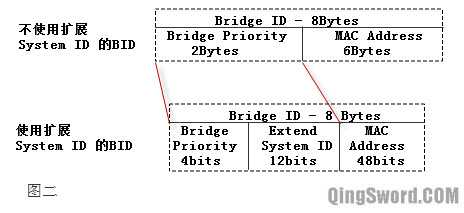BID一共8个字节，其中优先级2个字节，MAC地址6个字节。在不使用Extended System ID的情况下，BID由优先级域和交换机的MAC地址组成，针对每个VLAN，交换机的MAC地址都不一样，交换机的优先级可以是0-65535。在使用Extended System ID的情况下每个VLAN的MAC地址可以相同。值得一提的是，现在的交换机普遍使用Extended System ID。拥有最小BID的交换机被选举成为根交换机。
在同一个广播域中的所有交换机都参与选举根交换机，当一台交换机启动时，它假设自己是根交换机，并默认每隔2秒发送一次"次优BPDU"帧，BPDU帧中的Root ID（根交换机的BID）和本机的BID相同。在一个广播域中的交换机互相转发BPDU帧，并且从接收到的BPDU中读取Root ID，如果读取到的Root ID比本交换机的BID小，交换机更新Root ID为这个较小的Root ID，然后继续转发修改后的BPDU；如果接收的BPDU中的Root ID比本交换机的BID大，那么继续将自己的BID作为Root ID向外发送BPDU，直到最后在同一个生成树实例中拥有一致的Root ID，这个Root ID对应了这个广播域中某台交换机的BID（并且这个BID一定是这个广播域最小的），这台交换机就被选作根交换机。
下面用一个实例来演示一下根交换机的选举，在"Cisco Packet Tracer 6.2"中搭建下面的拓扑（GNS3+IOU环境同样可以完成这个实验，之所以用Cisco Packet Tracer是因为它可以更加直观的看到哪个接口在STP的作用下被关闭了）：
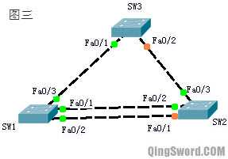线连接好后等待几十秒钟，它们会自动选举出根交换机，使用下面的命令验证：
/* * 在SW1上查看生成树信息，因为SW1、SW2、SW3上面都没有划分其他的VLAN， * 所以默认只有VLAN0001的生成树信息。 * * "Spanning tree enabled protocol ieee", * 表示交换机使用的生成树协议是"PVST+",这也是思科默认的生成树协议。 * * "Root ID"后面是VLAN1中根交换机的BID参数， * Priority 32769，表示根交换机的优先级是32769， * Address是根交换机的MAC地址， * "This bridge is the root"，表示当前这台交换机就是根交换机。 * * "Hello Time 2sec Max Age 20sec Forward Delay 15sec" * BPDU发送间隔默认2秒，最大存在时间是20秒，转发延时是15秒。 * * "Bridge ID"后面的参数是本交换机的BID参数， * 因为SW1就是根交换机，所以下面的参数和"Root ID"是一样的， * 其中"priority 32768 sys-id-ext 1",表示SW1的优先级是32768, * Extended System ID是1，所以总优先级就是32768+1=32769。 * * 所以SW1的BID=SW1的优先级+SW1的MAC地址=32769+0001.9681.2683 * 接下来查看SW2和SW3的生成树信息，就会知道为什么SW1可以被选举成根交换机了。 */ SW1#show spanning-tree VLAN0001 Spanning tree enabled protocol ieee Root ID Priority 32769 Address 0001.9681.2683 This bridge is the root Hello Time 2 ec Max Age 20sec Forward Delay 15sec Bridge ID Priority 32769 (priority 32768 sys-id-ext 1) Address 0001.9681.2683 Hello Time 2sec Max Age 20sec Forward Delay 15sec Aging Time 20 Interface Role Sts Cost Prio.Nbr Type ----------- ---- --- --------- -------- ---------- Fa0/1 Desg FWD 19 128.1 P2p Fa0/2 Desg FWD 19 128.2 P2p Fa0/3 Desg FWD 19 128.3 P2p /* * 查看SW2的生成树信息， * * 可以看到SW2的BID中，优先级是32769，和SW1相同， * 但SW2的MAC地址是0030.A310.3975，大于SW1的MAC地址， * 因为BID=优先级+MAC地址， * SW1的BID要小于SW2的BID， * 所以SW1为根交换机。 */ SW2#show spanning-tree VLAN0001 Spanning tree enabled protocol ieee /*这里是根交换机，也就是SW1的BID信息*/ Root ID Priority 32769 Address 0001.9681.2683 Cost 19 Port 2(FastEthernet0/2) Hello Time 2sec Max Age 20sec Forward Delay 15sec /*这里是SW2的BID*/ Bridge ID Priority 32769 (priority 32768 sys-id-ext 1) Address 0030.A310.3975 Hello Time 2sec Max Age 20sec Forward Delay 15sec Aging Time 20 /*查看SW3的生成树信息，优先级相同，同样是因为MAC地址比SW1大*/ SW3#show spanning-tree VLAN0001 Spanning tree enabled protocol ieee Root ID Priority 32769 Address 0001.9681.2683 Cost 19 Port 1(FastEthernet0/1) Hello Time 2sec Max Age 20sec Forward Delay 15sec Bridge ID Priority 32769 (priority 32768 sys-id-ext 1) Address 00E0.8F76.269C Hello Time 2sec Max Age 20sec Forward Delay 15sec Aging Time 20
通过这个实例，结合前面说的根交换机选举原理，就能很容易的理解根交换机是如何在一个广播域中被选举出来的了。
上面这种情况是默认连线后不做任何修改根交换机的选举情况，可以通过下面的命令将某台交换机的优先级改小，或者设置成动态优先级（即永远比其它交换机的优先级小），这样这台拥有较小优先级的交换机将成为根交换机。
结合上面的拓扑图（图3），将SW3的优先级改小，从而达到手动指定一台根交换机的目的：
/*首先我随便配置一个优先级*/ SW3(config)#spanning-tree vlan 1 priority 1000 /*它提示我，只能是4096的倍数，可以是下面的这些值*/ % Bridge Priority must be in increments of 4096. % Allowed values are: 0 4096 8192 12288 16384 20480 24576 28672 32768 36864 40960 45056 49152 53248 57344 61440 /* * 本例设置成4096，注意设置针对的是VLAN1， * 不同的VLAN优先级可以不同， * 不同VLAN的STP选举出来的根交换机也可以不同， * 比如SW3现在是VLAN1的根交换机， * 假设还存在一个VLAN2，并且在SW1上使用这条命令: * spanning-tree vlan 2 priority 4096 * 那么SW1就将成为VLAN2的根交换机，前提是VLAN2下有端口。 */ SW3(config)#spanning-tree vlan 1 priority 4096 SW3(config)#end /*过个一两秒，查看SW3的生成树信息，发现他已经成为了根交换机。*/ SW3#show spanning-tree VLAN0001 Spanning tree enabled protocol ieee Root ID Priority 4097 Address 00E0.8F76.269C This bridge is the root Hello Time 2sec Max Age 20sec Forward Delay 15sec Bridge ID Priority 4097 (priority 4096 sys-id-ext 1) Address 00E0.8F76.269C Hello Time 2sec Max Age 20sec Forward Delay 15sec Aging Time 20
使用下面的命令可以让交换机自动动态的调整自己的优先级为整个广播域最小，使用这条命令让SW2成为vlan1的根交换机：
/*首先清除SW3上面手动配置的优先级*/ SW3(config)#no spanning-tree vlan 1 priority /*在SW2上配置自动调整优先级，让SW2动态调整*/ SW2(config)#spanning-tree vlan 1 root primary /*等待几秒钟，查看SW2的生成树信息,发现根交换机变成了自己*/ SW2#show spanning-tree VLAN0001 Spanning tree enabled protocol ieee Root ID Priority 16385 Address 0030.A310.3975 This bridge is the root
c.端口花费和路径花费
根交换机被选举出来后，计算其他交换机到根交换机的花费，STA考虑两种花费，端口花费和路径花费，路径花费是从根交换机出发到最终交换机前进方向进入的端口花费总和，也就是说在上面的拓扑图图三中，假设SW1是根交换机，想要改变SW3到根交换机SW1的花费，应该在SW3的fa0/1来改变，而不是在SW1的fa0/3端口上改变。
如果一台交换机有多条路径到达根交换机，这台交换机会选择路径花费最小的那条，下面是默认的端口花费参照表：
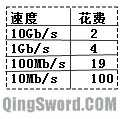这个参照表只是端口默认的花费，端口花费是可以手动修改的，因为"Cisco Packet Tracer 6.2"不支持修改端口花费，修改端口花费的实验使用GNS3来进行，拓扑（图5）如下：
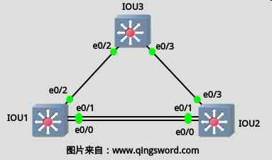IOU1-3为IOU虚拟机中运行的交换机，其中IOU1被选举成为根交换机，先在IOU3上面查看一下默认的生成树信息：
IOU3#show spanning-tree VLAN0001 Spanning tree enabled protocol ieee Root ID Priority 32769 Address aabb.cc00.0100 /* * 可以看到IOU3到根交换机的花费是100， * 这说明IOU3的e0/2接口速率是10Mb/s。 */ Cost 100 Port 3 (Ethernet0/2)
尝试修改IOU3的e0/2接口到根交换机的花费：
IOU3#conf t /*将IOU3的e0/2接口花费改成300*/ IOU3(config)#int e0/2 IOU3(config-if)#spanning-tree cost 300 IOU3(config-if)#end /* * 再次查看IOU3的生成树信息，发现花费居然变成了200， * 这是为什么呢？不是应该为300吗？ * 另外还发现下面的Port端口也发生了变化， * 没有修改前是e0/2，现在是e0/3, * 这说明去往根交换机的数据是通过IOU3的e0/3发给IOU2再转发给IOU1的， * 这是因为我们将IOU3的e0/2的花费修改成了300， * 然而，通过IOU3的e0/3发给IOU2再转发给IOU1的花费只有200， * 即IOU3的e0/3的默认花费100，加上IOU2的e0/0的默认花费100， * 前面也提到了，交换机选取花费最小的那条路径去往根交换机。 */ IOU3#show spanning-tree VLAN0001 Spanning tree enabled protocol ieee Root ID Priority 32769 Address aabb.cc00.0100 Cost 200 Port 4 (Ethernet0/3)
d.BPDU结构浅析
前面提到的交换机之间通过转发BPDU来选择根交换机，这里将BPDU帧的结构简单的介绍一下：
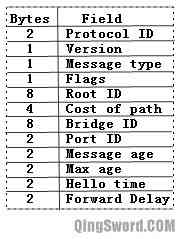BPDU包含12个字段，如上图所示，部分字段解释如下：
Flags：标记域,包含TC（Topology Change，拓扑改变）比特位，TCA(Topology Change Acknowledgment,拓扑改变确认)比特位。
Root ID：包含了根交换机的BID。
Cost of path：到根交换机的路径花费。
Bridge ID：转发BPDU的交换机的BID。
Port ID：转发BPDU的交换机的PID，PID等于端口优先级(默认128)加端口号，后面会介绍到。
Message age：BPDU已经存在的时间。
Max age：BPDU最大存在时间。
Hello time：根交换机发送配置信息的间隔时间，默认2秒。
Forward Delay：转发延时，默认15秒。
e.STP端口角色
1）根端口(Root Port,RP)：每个非根交换机上有且仅有一个根端口，稍后的生成树选举中会详细介绍根端口的选举过程。
2）指派端口(Designated Port,DP)：网络上除根端口外，所有允许转发流量的端口，每个网段都有一个指派端口，根交换机上的端口都是指派端口。
3）非指派端口：既不是根端口也不是指派端口，这种端口虽然是激活的但是会被堵塞(Blocking)用来阻止环路，根端口和指派端口都处于转发(Forwarding)状态。
4）禁用端口：被管理员使用"shutdown"命令关闭的端口称作禁用端口，禁用端口不参与生成树算法。
f.端口状态和BPDU时间
互连交换机通过在一个广播域交换BPDU帧构建一个逻辑上无环的路径，当一台交换机启动后，如果一个交换机端口直接转换到转发状态可能会造成暂时性的环路。为了使用这个逻辑生成树，交换机需要在五种状态间转换，转换会历经三种BPDU时间。
下面是STP中的五种端口状态：
1）Down（禁用）状态，可以使用"no shutdown"命令和插入网线来激活。
2）Blocking（阻塞）状态，链路激活后转入阻塞状态，这个状态大约停留20秒，主要用来确定该端口的角色；如果判断出该端口是非指派端口，则将保持在这一状态，即阻塞，如果处在阻塞状态的端口接收不到BPDU了，也会转入下一状态；如果判断出是其他端口角色，则转入下一状态。
3）Listening（侦听）状态，这个状态大约停留15秒，除了接收BPDU外，还向邻居发送BPDU，通知邻居它将参与激活拓扑。
4）Learning（学习）状态，大约停留15秒，开始学习MAC地址。
5）Forwarding（转发）状态，端口可以转发数据帧。
BPDU的时间有三种：Hello Time、Max Age、Forward Delay；
1）Hello时间控制了发送配置BPDU的时间间隔，默认2秒。这是根交换机生成BPDU并向非根交换机发送的间隔。
2）非根交换机接收到根交换机发送来的BPDU，再从除接收端口以外的其他端口转发出去，如果在2-20秒里面由于网络故障没有新的BPDU从根交换机发送过来，非根交换机将停止向外发送从根交换机接收到的BPDU。如果这种情况持续20秒，也就是最大存活期，非根交换机就使原储存的BPDU无效，并开始寻找新的根端口。所谓最大存活期就是非根交换机丢弃BPDU前用来备份储存它的时间。
3）转发延时是交换机在侦听状态到学习状态所花的时间，默认是15秒。
从上面的叙述中我们可能会发现，一台启动STP的交换机，每个端口从UP到Forwarding所需的时间大约是50秒左右，而普通的二层交换机端口UP到Forwarding瞬间就能完成。这会带来一个问题，那就是如果这台启动STP的交换机的接口连接的是一个终端设备，比如计算机，那么端口加电启动后计算机就要等上50秒才能发送数据，这很不合理，可以使用下面的命令将支持STP的交换机与终端相连的端口设置成快速端口，这样端口从UP到Forwarding也能一瞬间完成了。但要注意，仅在连接计算机的端口上使用快速端口的功能，不要在和其他交换机，集线器网桥相连的端口上使用这个功能，否则很容易造成环路。
/*假设这台交换机的fa0/1到10口都连接的是计算机*/ Switch(config)#int range fa 0/1 - 10 Switch(config-if-range)#spanning-tree portfast
0×3.STP收敛
STP的收敛就是整个网络达到稳定的状态，选举出了根交换机，并决定出所有端口的角色，排除所有的潜在环路。
a.生成树的选举
这一小节是这篇文章最重要的部分，上面的所有理论都会在这一小节得到解释和应用，STP最终收敛成为一个没有环路的网络需要满足下面四点：
每个广播域只能有一个根交换机。
每个非根交换机有且只有一个根端口。
每个网段有且只能有一个指派端口。
既不是根端口也不是指派端口的端口会被阻塞。
下面来看看生成树的选举过程，一共分为四步：
1）选举根交换机
交换机之间通过发送BPDU来选举根交换机，拥有最小BID的交换机将成为根交换机，每个广播域只能有一个根交换机。
2）选举根端口
每个非根交换机有且只有一个根端口，选举根端口依照下面的顺序：
首先，最低花费的端口将成为根端口；在花费相同的情况下比较发送者的BID，BID小的将成为根端口，请看下面这张拓扑图；
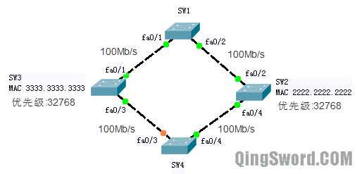图中SW1被选举成根交换机，交换机之间的链路都是100Mb/s,所以SW2的根端口是SW2的fa0/2接口，SW3的根端口是SW3的fa0/1接口，因为他们从这个接口去根交换机的花费都是19，小于通过SW4去根交换机的花费。那么SW4的根端口是哪个呢？不论从自己的哪个接口去往根交换机（经过SW2或SW3），花费都是一样(38)，所以在花费相同的情况下比较发送者的BID，也就是比较SW2和SW3的BID，显然SW2的BID(32768+2222.2222.2222)小于SW3的BID（32768+3333.3333.3333），所以SW4将自己和SW2相连的接口fa0/4选举成为根端口。
在发送者BID相同的情况下，比较发送者的PID,请看下面这张图：
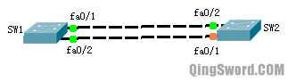上图中，SW1和SW2通过两条100Mb/s线路相连，SW1拥有较小的BID被选举成为根交换机，这时SW2要选举根端口，首先SW2会寻找最低花费的端口,但是去往SW1的两个端口的花费都是19，然后SW2比较发送者的BID，SW2发现，两个端口都连接的是SW1，发送者（SW1）的BID相同，这个时候，就会比较发送者的PID，也就是端口ID（端口ID等于优先级加上端口号，默认端口优先级是128）,发送者（SW1）端口ID较小的那个端口对应的本地（SW2）上的那个端口，将成为根端口。
假设此时在SW1上查看生成树信息：
SW1#show spanning-tree /* * 这一部分信息就是SW1上面的端口信息，其中Prio下面的就是端口ID， * 可以看到SW1的fa0/1默认端口ID是128.1，小于fa0/2的端口ID。 */ Interface Role Sts Cost Prio.Nbr Type ------- ---- --- ---- ---- ---- Fa0/1 Desg FWD 19 128.1 P2p Fa0/2 Desg FWD 19 128.2 P2p
从输出可以看到，SW1上面的fa0/1拥有较小的端口ID，它对应了SW2的fa0/2端口，所以SW2的fa0/2端口被选举成为根端口。
如果发送者的PID也相同，那么比较接收者的PID,看下面这种情况：
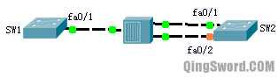上图中，SW1的fa0/1连接在一台集线器上，SW2的fa0/1和fa0/2也连接在这台集线器上，线路均为100Mb/s，假设SW1拥有较小的BID被选举成根交换机，SW2现在要选举根端口，首先根据前面说的，比较花费，SW2从两个端口到根交换机SW1的花费都相同；然后SW2比较发送者BID，发送者（SW1）的BID也相同；SW2再比较发送者PID，发现发送者PID也相同（都为SW1的fa0/1端口）；这个时候，SW2比较接收者，也就是自己的PID，将自己PID最小的那个端口选举成根端口。
可以根据SW2的生成树信息输出判断，fa0/1拥有更小的PID，所以它被选举成为根端口：
SW2#show spanning-tree /* * 下面这一部分可以看到fa0/1拥有更小的PID 128.1, * Root FWD 表示这个端口被选举成为了根端口，并且状态是转发， * Altn BLK 表示这个端口既不是根端口也不是指派端口，被阻塞。 */ Interface Role Sts Cost Prio.Nbr Type ------- ---- --- ----- -------- ---- Fa0/1 Root FWD 19 128.1 Shr Fa0/2 Altn BLK 19 128.2 Shr /* * 这里补充一个知识点，端口的优先级默认为128, * 而这个端口优先级是可以手动修改的， * 可以将fa0/2的优先级通过下面的命令改成100， * STP重新收敛后，Fa0/1将被阻塞，Fa0/2将被选举成为根端口, * 端口优先级的取值范围一般为0-192或0-255， * Cisco Packet Tracer中不支持这一条命令，可以在GNS3中测试。 */ SW2(config)#int fa 0/2 SW2(config-if)#spanning-tree port-priority 100 /*在GNS3+IOU环境中，重新调整端口优先级后需要手动触发一次根交换机的选举才能让端口改变状态，比如手动在根交换机上配置一个较小的优先级*/
到这里，选举根端口的全部可能性都讲解完了。下面讲解指派端口的选举。
3）选举指派端口
每个网段有且只有一个指派端口。其实，每个网段都有一个指派交换机，指派交换机上如果有多个端口，再从多个端口中选举出一个成为指派端口，指派端口的选举依照下面的顺序：
比较花费；
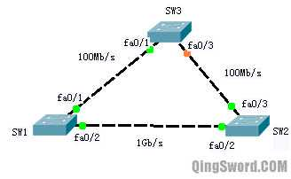上图中，假设SW1被选举成了根交换机，因为每个网段都有一个指派端口，在SW1和SW3相连的线路上，由于SW1本身是根交换机，SW1的fa0/1端口到自己的花费是0，所以SW1的fa0/1接口被选举成指派端口（根交换机上的所有端口都是指派端口）；同理在SW1和SW2相连的网段上，SW1的fa0/2也被选举成了指派端口；而在SW2和SW3相连的网段上，由于SW1和SW2之间是1Gb/s链路，SW2去往根交换机的花费（4）要小于SW3去往根交换的花费（19），所以SW2是这个网段上的指派交换机，SW2的fa0/3将成为这个网段的指派端口。再根据前面的根端口的选举可以知道SW2的fa0/2是根端口，SW3的fa0/1是根端口，SW3的fa0/3端口因为不是根端口，也不是指派端口，所以被阻塞。
花费相同则比较接收者的BID（这次不是发送者了）；
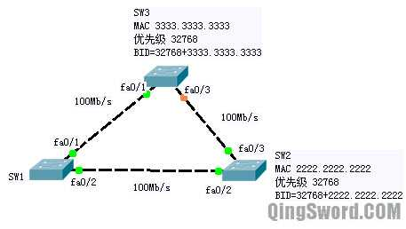上图中，SW1是根交换机，在SW2和SW3相连的网段上，SW2和SW3到根交换机的花费相同，这时就需要比较接收者的BID，也就是SW2和SW3的BID，BID小的将成为指派交换机，从图中可以看到SW2的BID小于SW3的BID，所以SW2是指派交换机，SW2的fa0/3端口将成为指派端口。
接收者的BID也相同则比较接收者的PID；
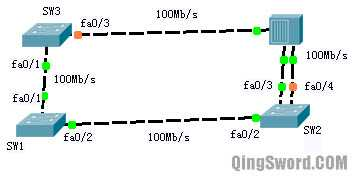上图中，SW1是根交换机，SW2和SW3相连的网段上有一台集线器，SW2有两个端口连接在这台集线器上，这种情况下，根据上面一步比较出了SW2的BID比SW3小，但是SW2上面有多个端口连接在这个网段，这时就要比较这些端口的PID，拥有最小PID的成为指派端口(fa0/3)，PID大的剩余端口全部阻塞（fa0/4阻塞）,通过在SW2上查看生成树信息验证：
SW2#show spanning-tree VLAN0001 Spanning tree enabled protocol ieee Root ID Priority 24577 Address 0090.21DE.9A5B Cost 19 Port 2(FastEthernet0/2) Hello Time 2sec Max Age 20sec Forward Delay 15sec Bridge ID Priority 32769 (priority 32768 sys-id-ext 1) Address 0004.9A05.9A31 Hello Time 2sec Max Age 20sec Forward Delay 15sec Aging Time 20 Interfac Role Sts Cost Prio.Nbr Type -------- ---- --- ---- -------- ---- Fa0/2 Root FWD 19 128.2 P2p Fa0/3 Desg FWD 19 128.3 Shr Fa0/4 Altn BLK 19 128.4 Shr /*可以看到默认的PID fa0/3比fa0/4小，所以fa0/4被阻塞，fa0/3是指派端口*/
4）阻塞端口
既不是根端口也不是指派端口的端口将被阻塞。
b.STP拓扑变化
当交换机检测到端口发生了变化时，交换机将通知根交换机拓扑变化情况，根交换机再将这一情况扩散到整个网络，有三种特殊的BPDU用来完成这些工作：TCN(Topology Change Notification)BPDU-拓扑改变通知BPDU、TCA（Topology Change Acknowledgement）BPDU-拓扑改变确认BPDU、TC（Topology Change）BPDU，下图演示了这一过程；
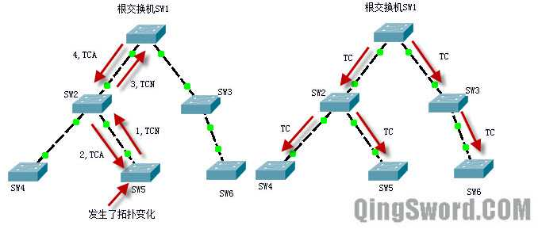上图中，左边SW5首先检测到了拓扑变化，它从根端口向SW2发送TCN，SW2使用TCA向SW5确认，然后SW2产生一个TCN从自己的根端口发送给SW1，也就是根交换机，根交换机SW1收到这个TCN后，使用TCA向SW2确认。一旦根交换机知道了这一拓扑变化，它将向外广播发送TC位被设置的BPDU，就是上图右边的情况，最后整个广播域都知道了这一变化。
0×4.STP负载均衡实验
实验在GNS3+IOU环境中完成，下图中IOU1-2是运行在IOU虚拟机中的两台交换机，接口连线如图所示：
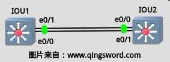在上图中，IOU1的e0/0连接了IOU2的e0/1，IOU1的e0/1连接了IOU2的e0/0，这两条链路被配置成主干，将IOU1设置成VTP Server，IOU2设置成VTP Client，在IOU1上新建VLAN2，让IOU1成为VLAN1的根交换机，SIOU2成为VLAN2的根交换机，这样根据前面的叙述（根端口选举以及指派端口选举），在VLAN1生成树实例中IOU2的e0/0接口将被阻塞，VLAN1的流量将全部从下面那条线路经过，而在VLAN2生成树实例中IOU1的e0/0将被阻塞，VLAN2的流量将全部从上面这条线路走。
/*首先将IOU1和IOU2相连的两条线路配置成主干*/ IOU1#conf t IOU1(config)#int e0/0 IOU1(config-if)#swi mod tr IOU1(config-if)#swi tr enc dot IOU1(config-if)#swi tr all vl all IOU1(config-if)#int e0/1 IOU1(config-if)#swi mod tr IOU1(config-if)#swi tr enc dot IOU1(config-if)#swi tr all vl all IOU1(config-if)#exit IOU2#conf t IOU2(config)#int e0/0 IOU2(config-if)#swi mod tr IOU2(config-if)#swi tr enc dot IOU2(config-if)#swi tr all vl all IOU2(config-if)#int e0/1 IOU2(config-if)#swi mod tr IOU2(config-if)#swi tr enc dot IOU2(config-if)#swi tr all vl all IOU2(config-if)#exit /*将IOU1配置成VTP Server，IOU2配置成VTP Client*/ IOU1(config)#vtp mode server IOU1(config)#vtp domain www.qingsword.com IOU1(config)#vtp version 2 IOU1(config)#vtp pass 123456 IOU2(config)#vtp mod cl IOU2(config)#vtp do www.qingsword.com IOU2(config)#vtp pass 123456 /*在VTP Server上增加Vlan2*/ IOU1(config)#vlan 2 IOU1(config-vlan)#name vlan2 IOU1(config-vlan)#exit /*确保IOU2学习到了这个Vlan2后，将IOU1配置成Vlan1的根交换机，将IOU2配置成Vlan2的根交换机*/ IOU1(config)#spanning-tree vlan 1 root primary IOU2(config)#spanning-tree vlan 2 root primary /* * 根据前面介绍的STP收敛， * 可以分析出哪些端口会被阻塞， * 因为思科交换机默认使用的STP协议为PVST+, * 这种协议为每一个VLAN生成一个生成树。 */ IOU1#show spanning-tree /*VLAN1的生成树，在本实例中IOU1是Vlan1的根交换机*/ VLAN0001 Spanning tree enabled protocol ieee Root ID Priority 24577 Address aabb.cc00.0100 This bridge is the root Hello Time 2 sec Max Age 20 sec Forward Delay 15 sec Bridge ID Priority 24577 (priority 24576 sys-id-ext 1) Address aabb.cc00.0100 Hello Time 2 sec Max Age 20 sec Forward Delay 15 sec Aging Time 300 sec Interface Role Sts Cost Prio.Nbr Type ---------- ---- --- ---- -------- ---- Et0/0 Desg FWD 100 128.1 Shr Et0/1 Desg FWD 100 128.2 Shr /*这里是VLAN2的生成树，IOU2是根交换机*/ VLAN0002 Spanning tree enabled protocol ieee Root ID Priority 24578 Address aabb.cc00.0200 Cost 100 Port 2 (Ethernet0/1) Hello Time 2 sec Max Age 20 sec Forward Delay 15 sec Bridge ID Priority 32770 (priority 32768 sys-id-ext 2) Address aabb.cc00.0100 Hello Time 2 sec Max Age 20 sec Forward Delay 15 sec Aging Time 300 sec /*IOU1的e0/0端口在VLAN2生成树实例中被阻塞*/ Interface Role Sts Cost Prio.Nbr Type ---------- ---- --- ---- -------- ---- Et0/0 Altn BLK 100 128.1 Shr Et0/1 Root FWD 100 128.2 Shr
这样就实现了VLAN的负载均衡和冗余备份；线路没有故障前VLAN1的数据从下面的路径走，VLAN2的数据从上面的路径走，当任意一条路径出现故障的时候，STP重新收敛，剩下的那条线路将承担VLAN1和VLAN2的全部流量。